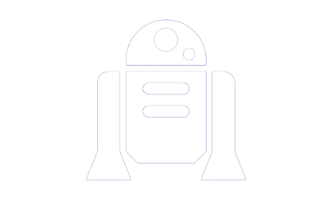

Lecture Interactively
Simple and intuitive user interface and easy login.
Possibility to ask anonymous and prioritize relevant questions to answer in class. Asking questions that do not interrupt the flow of the class or the train of thought of the lecturer
Offers features that existing applications may lack in addition of being free and open source.
A website that provides a real-time chat room for the lecture. Here the students can send anonymous questions and the professors can respond digitally or verbally. Answers from professors or fellow students can be crowd-sourced to automatically give answers to common questions. Some select questions would also be answerable through online queries.
Traditionally lectures in universities have been practicing passive teaching methods. This form of teaching requires the lecturer to be able to convey the lecture without any unclarity or misunderstandings between them and the students. In reality this is incredibly difficult, and research shows that a more active approach to teaching produces better results. In order to achieve the improved results it’s necessary for the lecturer to assess their audience and allow them to ask questions.
In active teaching today there is a large communication distance between lecturer and students and little interactivity between student and lecturer. This results in good questions going unasked, and there is no way of prioritizing which questions asked are the most important ones. In active teaching a lecturer also spends too much time answering simple questions that could be automatically answered. This is an orthogonal problem of the interactive lecture-problem, though combining the two solutions will synergize very well. The analysis of the two separate problem domains will be analysed individually.
There have been several approaches to make tools to make teaching and lectures more active and the communicative distance between lecturer and student smaller, but none of these tools solve the problems we face in its entirety.
To evaluate the website, case studies that combined structured interviews and observation of users while interacting with the website were conducted. Participants consisted of TAs, Professors and students from KAIST (Korean Advanced Institute of Science and Technology).
Results show interest of using the website from all participants and percieved value. Obsertvations matched users perception of easy-to-use interface, due to the low time from users in performing tasks. Users opinions are ambiguous regarding the intrusiness of notifications, thus a flexible option to notifications was included.
The architecture was benchmarked and showed promising results of low latency of 100 requests per second and 41.7 ms latency in the worst case scenario.
For this project, I went through several design iterations to find a simplistic yet unique design for our tool. To keep it simple I decided to have a simple login method that is unique to the university, by simply including course code. The design of the main chatroom initially an explorative approach to the look and feel. It worked as an intial prototype to gather feedback on the students and professors expectations. After we conducted the initial interviews, I realized that there was a lot of user expectation when creating an integrated tool. That is why I opted for a more Material design oriented look and feel that most are accostumed to. The tool would make use of vertical scrolling and better contrast, this did not only improve the feel but helped with understanding of the tool for new comers. Personally I aimed to a different and more distinct design from other tools, but I quickly learned the importance of tech literacy that users have, and how to take advantage of it.